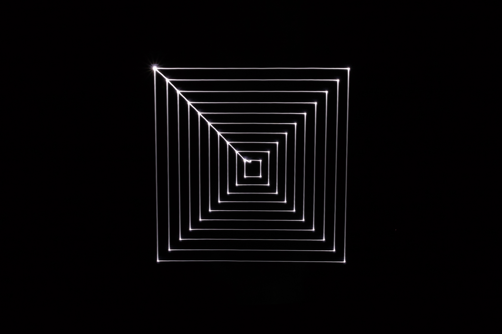
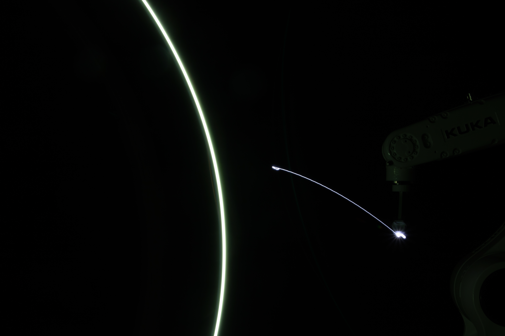
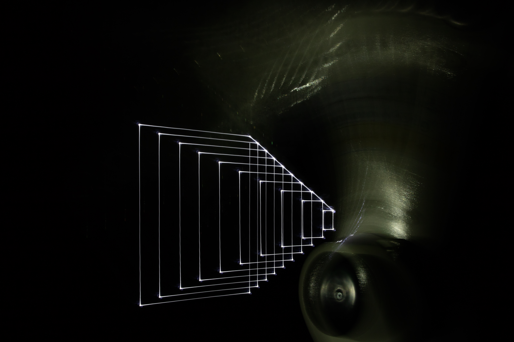

LEESIEUN
WORK
C.V
CONTACT
보이지 않는 것들
2018 / Light Drawing / KUKA, LED / 2m*2m / ATEC, Ansan
1 / 4

2 / 4
3 / 4

4 / 4

❮
❯
시각적이지 않은 것을 시각적으로 표현한다.
시간, 궤도, 음악 같은 것들에 대해서 표현하고 싶었다. 그중에서도 시간이라는 키워드에 포인트를 두고 작업을 하였다.
시간이라는 것이 평면적이지 않은것에 대해 이야기하며 단순히 평면에 표현하지 않고, 3차원이라는 공간에서 작업이 진행되었다.